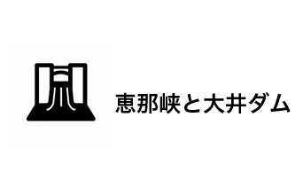

恵那峡のある「恵那市」は、岐阜県の南東部に位置する市です。 恵那市の南部にあたる「恵南地区」には「日本一の農村風景」の岩村町、「日本の棚田百選」に選ばれた坂折の棚田など、雄大な自然が今も残り、四季折々の美しさを見せてくれます。 歴史的にも見どころがいっぱいで、日本三大山城の一つに数えられる名城「岩村城」の城址や、レトロな雰囲気漂う「日本大正村」他、恵那峡から少し足を伸ばせば、石畳が懐かしく美しい「馬籠宿」や江戸時代の面影を色濃く残した「妻籠宿」で感動と出会うことができます。

大正13年、ここに我が国初のダム式水力発電所が建設されました。 歴史的にも貴重な「大井ダム」は近代化産業遺産にも登録されています。またダム建設によって誕生した人造湖は、恵那峡という新たなる名勝となりました。
日本大正村は、特定の敷地内に設けられた施設ではなく、今も大正時代のたたずまいを残した街並、風景、生活が息づいたままの村中が大正時代の博物館です。
高速ジェット船で付知川との合流点、品の字岩までの恵那峡めぐりをお楽しみいただけます。両岸にそそりたつ軍艦岩・獅子岩・屏風岩・品の字岩など奇岩・怪石が皆様をお迎えします。往復２０Km。乗船時間は３０分です。